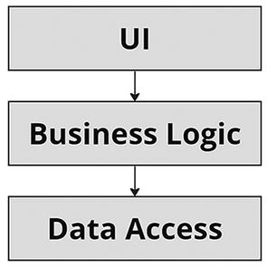
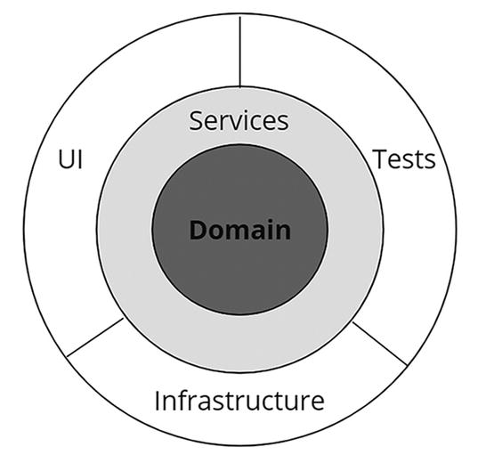
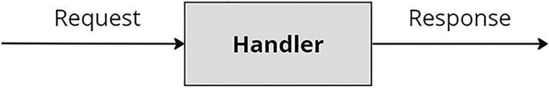
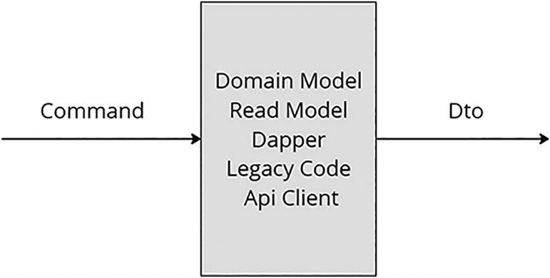
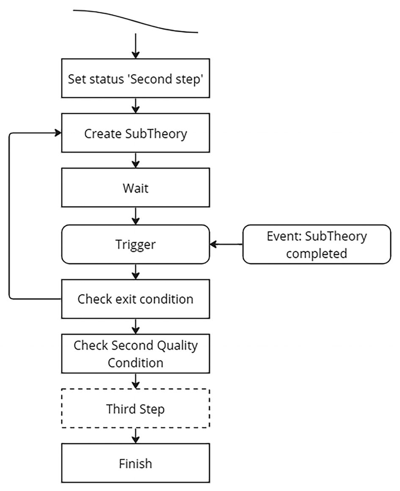
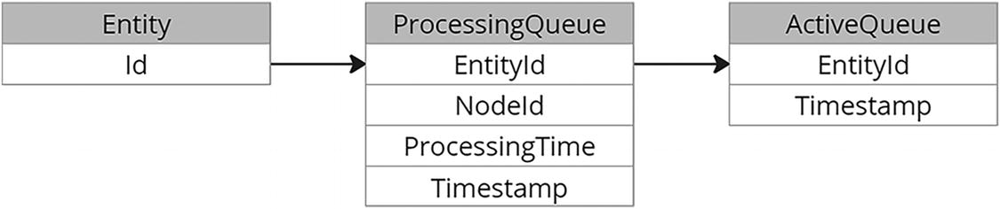
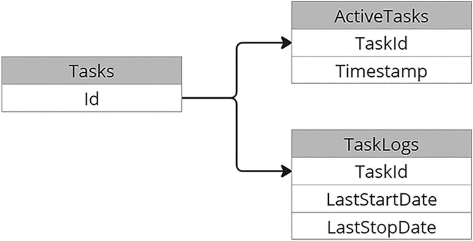

5. Technology Stack and Libraries
© The Author(s), under exclusive license to APress Media, LLC, part of Springer Nature 2024
V. DolzhenkoAlgorithmic Trading Systems and Strategies: A New Approachhttps://doi.org/10.1007/979-8-8688-0357-4_5
5. Technology Stack and Libraries
Viktoria Dolzhenko1
(1)
San Jose, Costa Rica
In previous chapters, we discussed the architectural solution of our system, learned what services it would consist of, and saw how they are connected to each other. In this chapter, we will discuss exactly how the services will be created, what technology stack we will use, what architecture we will use to build our services, and what logic we will use to create our classes and use them in the future. We will also discuss modern libraries for solving common problems, such as working with databases. Also in this chapter I will show how to implement the libraries that will be used in both subsystems, such as the state machine and the operation of background jobs.
Note that in this book we will pay more attention to the back end, and I will talk about the front end only in passing. This is because the front end of our system will not be complicated, so you can choose any framework to implement it. We will have no complex states or websocket connections. In fact, when creating the first version of my system, I did not create a front end for it at all. All I needed was a database tool such as pgAdmin or DataGrip to view and change my data, as well as Postman to run queries. Only much later, when the system began to generate income and trusted people joined me, did I implement the front end. Then, to build the front end, I used React, which I was familiar with, with a free library of components so as not to spend too much time on the part of the application that was not essential for me.
Choosing a Framework
Let’s start with choosing a language and framework. I think it makes sense to be pragmatic in this matter. This means I don’t want to dive headfirst into learning a new technology and language just because it has some advantages over the languages I already know. My goal is not to learn a new technology but to build a trading system. For example, the leading language for developing serious trading robots right now is C++. But I don’t know this well enough, and it’s not as convenient as the C# I’m used to. Perhaps in the future, when I reach the C# ceiling in data processing speed, I will transfer some services to C++, but this definitely should not be done before the system is launched. It doesn’t matter what language you write your first system in; the main thing is that you are comfortable and that your framework has reliable libraries for building an API, working with a database, and working with a distributed event streaming platform like Kafka.
At the time of writing this book, my stack, for example, included two popular frameworks: .NET.NET and NestJs. I wrote highly loaded systems on both, and both worked perfectly. But to build this system, I chose .NET.NET because it is much more convenient to work with arrays than in TypeScript. Also, .NET.NET works better with asynchronous code, unlike TypeScript, and is more productive. Also in .NET.NET it is much more convenient and easier to write autotests. And I will repeat once again that when choosing a framework, I advise you to be pragmatic and inclined to choose a framework that is familiar to you.
Application Architecture
Probably the first questions that any developer who creates a service from scratch asks is about naming and arranging your application projects. How many should there be? In what directories should they be located? How should classes be structured, and what should each be responsible for? If you look for the answer to these questions on the Internet, such designations as service layer, clean and onion architecture, DDD, CQRS, repositories, and much more pop up. Let’s understand what types of architecture there are and what each of them has to offer. I will show how different approaches were created and evolved.
Spaghetti Code
Let’s start with the very first approach to writing an application that is familiar to all developers: spaghetti code.
The following are distinctive features of this approach:
-
Lack of architecture. Each developer writes code as they see fit.
-
Terrible connection. Everything is connected to everything. If someone changes something in one part of the system, then something may break in another part of it.
-
Development time. It takes a very long time for new developers to immerse themselves in the system code, because generally accepted patterns are not used.
When developers just started creating the first applications, most of the patterns had not yet been created and fixed. Therefore, programmers coped as best they could. They simply had no choice, because the developer community had not yet agreed on how applications would be built, and more modern approaches had not been developed.
But despite that spaghetti code, to put it mildly, is not suitable for writing applications in the modern world, it still continues to be used, and perhaps all of us have written and are still writing applications based on this approach. Spaghetti code is great for quickly writing code that will live in a matter of hours, or even minutes.
Clean Architecture
Obviously, developers quickly realized that spaghetti code is not the best architecture for applications. Figure 5-1 shows what it looks like when we differentiate even slightly between levels in the code.

A workflow of three stages. U I, business logic, and data access.
Figure 5-1
Layers
The code was still like spaghetti, but that spaghetti was strictly limited to the boundaries of its layer. The UI layer was responsible for representations, for example the data transfer objects (DTOs) for the API. The business logic layer in which the domain model, a certain layout of the real world, and all the logic associated with it are concentrated. The data access layer contains the logic for working with a database, for example. The code has definitely improved. Controllers and repositories appeared, which made the code much easier to understand.
But after the SOLID principles were formed, developers realized that the abstract domain code from the business logic layer depends on the implementation of the data access layer, which greatly violates these principles. Therefore, it was decided to expand the data access layer and make the business logic completely independent of the data access layer. The result was the so-called clean architecture, which is demonstrated in Figure 5-2.

Three concentric circles. The inner circle is the domain. The middle circle is services. The third circle has three parts such as U I, tests, and infrastructure.
Figure 5-2
Clean architecture
I will briefly explain the SOLID principles here:
-
S – Single responsibility. Your program unit should have only one responsibility. By unit I mean not only a class but also a library, part of your program or service.
-
O – Open/closed principle. Software objects must be open for extension and closed for modification.
-
L – Liskov substitution principle. The inheriting class should complement, not replace, the base class. In practice, this means that functions that use a base type should be able to use its subtypes without knowing it.
-
I – Interface segregation principle. Interfaces that are too thick should be split into smaller ones so that clients of small interfaces are aware of the methods they need to do their work.
-
D – Dependency inversion principle. Top-level modules should not depend on lower-level modules.
In a clean architecture, the domain layer, the former business logic layer, is placed at the center and accessed through services. Perhaps at the moment this is the most popular approach to building applications. This approach is justified until you start writing more complex applications, when you have many services. As a result, the map of their interaction becomes precisely the spaghetti they tried to get rid of. I know projects where you open a controller or service and there are dozens of imported classes and dependencies. I understand that such multitasking services need to be refactored and separated, but this did not solve the problem of strong connectivity of services.
That’s when experts came onto the scene and proposed a different approach to building architecture. They showed that it might make sense to build applications based not on layers but on use cases. For this they suggested using the mediator pattern, namely, creating commands with handlers, as shown in Figure 5-3.

A block diagram. The handler module receives the requests and gives the response.
Figure 5-3
Command handler
Note
A few words about the mediator pattern. This pattern belongs to a group of behavioral patterns. It helps reduce the interconnection of objects by moving these relationships into a separate mediator class. The mediator pattern causes classes to communicate not directly with each other but through an intermediary. Regarding commands, this means you will not issue commands to a specific handler or service but to an intermediary, who will decide who will process this command.
In this approach, what is inside the handler becomes unimportant. Whether it’s working with the domain model or maybe some legacy code that you isolate, it doesn’t matter. The important thing is that now in your code you don’t think about which service to place this or that function in or which layer is responsible for providing this or that functionality. Everything has become easier. You have a specific command and its handler. See Figure 5-4.

A block diagram. The domain model real model dapper legacy code Api client module intakes a command and gives D t o output.
Figure 5-4
Possible functionality of handlers
Whether to use a service layer approach or use commands depends on the developer and their preferences. There is no universal solution. I prefer to use a mediator and commands. Then it’s easier for me to divide the application into independent parts and understand how it all works.
Domain-Driven Design vs. Anemic Model
Another question that periodically arises when creating systems is what type of model to use.
Domain-driven design (DDD) tells us to build a rich domain layer with a thin service layer when data structure and behavior are combined. In fact, this means that the classes that implement your domain model will be large, and they will contain most of the logic responsible for the behavior.
In the anemic model, everything is different. Data structure and behavior are divided between classes such as entity and service.
Some people think that the anemic model is an anti-pattern. And if a developer uses this approach, it means they have a poor understanding of the subject area and, because of this, are unable to competently build a domain model.
But if you look at many projects on GitHub, you will see that most of them are built on an anemic model. Why? It’s because building an application based on DDD is not just expensive, but very expensive. When designing a system with a rich domain model, it is necessary not only that the developers have excellent knowledge of the domain but that the domain itself is well-established and consistent. Unfortunately, this is often not the case, especially when you are writing a completely new application.
If we take our system as an example, I’m not sure that I identified the entities correctly, which means I’m not at all sure that my rich domain model will be correct. Therefore, I propose to take the evolutionary path. In other words, first build applications using the anemic model, and then gradually migrate the established code to the domain model.
Object Relational Mapper
Let’s talk about what object relational mapper (ORM) we will use. What is an ORM? It is a library that helps us work with the database. There are several popular ORMs in .NET, and the most commonly used one is, of course, the Entity Framework (EF). But I propose we consider another popular ORM, or rather a mini-ORM: Dapper. And there is one reason for this, namely, speed.
If you look at the speed reports on the official Dapper page (https://github.com/DapperLib/Dapper), Dapper is the most productive ORM. This is understandable. It simply does not have a lot of functionality that EF has. There is practically nothing in it except mapping.
It turns out that I will have to independently implement some of the functionality available in EF. But am I willing to sacrifice my development time for the sake of productivity? Of course! We built the entire system, trying to make it the fastest and most productive.
Since most developers use EF, I would like to pay a little attention to the functionality of Dapper here so that later in the book we can focus on more interesting things. I will do this using the example of creating one of our entities: ExchangeOrder.
How to Use Dapper
First, you need to create the entity classes ExchangeOrder and ExchangeDeal. ExchangeDeal is not an entity in the general sense of the word, but we agreed that first we will make the system cheaper, which means we use an anemic model. I could put the models that we work with in the business logic layer into separate classes and make my own classes for the ORM, but then I would have to write a lot of code to map these classes into each other, and this is a long and not very interesting task. Perhaps when the system becomes more complex, it will be possible to switch to rich models, but now we are not doing this. Therefore, ExchangeDeal is an entity and also a class that maps a database table.
Listing 5-1 I shows what my classes look like.
[Table("\"ExchangeOrders\"")]
public class ExchangeOrder
{
public int id { get; set; }
public int ExchangeId { get; set; }
public int InstrumentId { get; set; }
public decimal Amount { get; set; }
public IEnumerable
}
[Table("\"ExchangeDeals\"")]
public class ExchangeDeal
{
public int ExchangeOrderId { get; set; }
public decimal Amount { get; set; }
public decimal Price { get; set; }
}
Listing 5-1
Implementation of Entity Classes
I use PostgreSql in my projects because it is free, well-supported, popular, and used in many projects. I will also use this to build a trading system.
Pay attention to the Table attributes. They use double quotes to indicate the table name. The fact is that in PostgreSql, if the names of columns or tables are not in snake_case, then in queries they must be framed in double quotes. I could follow the PostgreSql conversion and name columns and tables in snake_case, but I won’t, because according to the C# conversion, public fields and classes should be named in PascalCase.
As I said earlier, ExchangeDeal is not an entity, because deals cannot exist without orders, so ExchangeDeal does not have an id column or property.
After we have written our entities, we need to implement a repository. But first I would like to implement a special class that is responsible for working with connections to the database. In EF, working with connections is hidden from us. Many developers don’t even think about the fact that their number of connections and how exactly they are created and destroyed. Since Dapper is not such a high-level library, we will have to create connections ourselves. Listing 5-2 presents a rudimentary implementation of the class that is responsible for working with them.
public class DbConnector
{
private NpgsqlConnection dbConnection =>
new (Environment
.GetEnvironmentVariable("POSTGRES_CONNECTION_STRING"));
public async Task
Func<DbConnection,
Task
{
try
{
await using var connection = dbConnection;
await connection.OpenAsync();
await using var dbTransaction =
await connection.BeginTransactionAsync();
try
{
T actionResult = await dbAction.Invoke(connection);
await dbTransaction.CommitAsync();
return actionResult;
}
catch (Exception)
{
await dbTransaction.RollbackAsync();
throw;
}
}
finally
{
dbConnection.Dispose();
}
}
}
Listing 5-2
DbConnector Implementation
Several things are notable about Listing 5-2. First, for each action with the database, its own connection will be created. Of course, this logic can be implemented in a more complex way, but at this stage I believe that this is enough. The second is that the actions will occur in one isolated transaction, we will need this when saving entities that use several tables in the database.
Now it’s time to implement the repository. Listing 5-3 shows the interface of this repository, which has the minimum required functionality.
public interface IExchangeOrderRepository
{
Task
Task InsertExchangeDealAsync(ExchangeDeal exchangeDeal);
Task
}
Listing 5-3
IExchangeOrderRepository Interface
Of course, all methods are asynchronous. Also note that although deals are part of the order, the method for saving it is separate. This is done because deals for orders will arrive separately, which means they can be saved separately from the order.
The implementation of the order creation method is very simple, thanks to the Dapper.Contrib package. In a pure Dapper package, we would have to write the Insert SQL code ourselves, but it’s enough to use the InsertAsync function.
public Task
{
return _dbConnector.PerformDbActionAsync(connection => connection.InsertAsync(exchangeOrder));
}
Listing 5-4
InsertOrderAsync Function
The code for receiving an order is interesting. In it we need to execute two queries to the database. They queries receive orders and deal with data. See Listing 5-5.
public Task
{
string sqlOrders = "select * from \"ExchangeOrders\" where id = @id";
string sqlDeals = "select * from \"ExchangeDeals\" where \"ExchangeOrderId\" = @id";
return _dbConnector.PerformDbActionAsync(async connection =>
{
var multipleResult = await connection.QueryMultipleAsync($"{sqlOrders};{sqlDeals}", new {id});
ExchangeOrder exchangeOrder = await multipleResult.ReadFirstOrDefaultAsync
if (exchangeOrder == null)
return null;
IEnumerable
exchangeOrder.Deals = deals;
return exchangeOrder;
});
}
Listing 5-5
GetOrderAsync Function
Migrations
Another point worth covering when working with Dapper is migrations. One of the most common libraries for these purposes is FluentMigrator. It’s very easy to work with and well-documented. Perhaps its biggest inconvenience is the need to write migrations yourself, but I understood what I was getting into when I agreed to use a micro ORM. Listing 5-6 shows an example migration for our two tables.
[Migration(202312171002)]
public class Migration_202312171002: Migration
{
public override void Up()
{
Create.Table("ExchangeOrders")
.WithColumn("id").AsInt32().PrimaryKey().Identity()
.WithColumn("ExchangeId").AsInt32().NotNullable()
.WithColumn("InstrumentId").AsInt32().NotNullable()
.WithColumn("Amount").AsDecimal(20, 10).NotNullable();
Create.Table("ExchangeDeals")
.WithColumn("ExchangeOrderId").AsInt32().NotNullable()
.WithColumn("Amount").AsDecimal(20, 10).NotNullable()
.WithColumn("Price").AsDecimal(20, 10).NotNullable();
}
public override void Down()
{
Delete.Table("ExchangeOrders");
Delete.Table("ExchangeDeals");
}
}
Listing 5-6
Migration
Listing 5-6 demonstrates the implementation of the migration class, which is used to create tables in the database. In this I create two tables, Table(“ExchangeOrders”) and Table(“ExchangeDeals”), and then create columns of the types I need in them.
I have covered the minimum required to start working with Dapper. If you want to dive deeper into it, there is a lot of useful information on the Internet.
Finite State Machine
In the previous chapter, we talked about what a finite state machine is and briefly discussed the principle of its operation. In this chapter, let’s dive deeper and talk about its implementation.
I have seen all sorts of options for the implementation of finite state machines. On GitHub you can find many options for ready-made solutions built on various technologies. Let’s look at one of the simplest ones, which we used in one of the online stores where I once worked.
Before we begin, let me first remind you of the main points related to the finite state machine. A finite state machine is a way for an entity to move through a process.
Here are the basic principles:
-
An entity can be in only one state at any given time.
-
The number of these states is finite.
-
There are precise rules for transitions between states.
Principle
The center of the state machine that we will implement is ProcessMap. There can be only ProcessMap for the entire application, and it contains entity transition rules between process map nodes. All entities move along it from top to bottom. The system also provides events that “rip” an entity from the current node, and it immediately “falls” onto the node that reacts to the event.
There are five types of nodes:
-
Act. This node performs some action. For example, send a letter to a user or calculate something and write the result to a database.
-
Waiting. Such nodes are necessary to wait for some event that will “rip” the entity from this node. When creating a node of this type, be sure to specify a timeout. If the entity has waited on this node for the specified time, then it will move to the next node.
-
Terminal node. It means that the entity must be removed from the process queue and stop processing.
-
Trigger. The node on which the entity will fall when an event with the type specified in the node settings arrives.
-
Description. Nothing happens in nodes of this type. But they are necessary as reference points for moving from other nodes.
Let me give an example of how this works, using the example of processing theory. We’ll take a small part of the process, because now my goal is to explain to you how it works. Figure 5-5 shows part of the theory processing flow in the second step.

A flow chart defines the second step processes. It comprises crating sub-theory, waiting, trigger, check exit condition, check second quality condition, third step, and finish.
Figure 5-5
Second step of theory flow
Let’s transfer this process to the process map of our state machine, as shown in Table 5-1.
Table 5-1
List of Nodes
N
Node Name
Node Type
Params
1
Set status ‘Second step’
Act
Status Id
2
Create SubTheory
Act
3
Wait
Waiting
1 day
4
Stop and report
5
SubTheory completed event
Trigger
Event id
6
Check exit condition
Act
Node id = 2
7
…
8
Finish
Terminal
Node 1. Set status ‘Second step’. This is a node of type Act, which sets the status of a theory somewhere in the database. I have specified the status ID that we want to set in the parameters of this node. This will help us write code to set the status only once and use Act with this type when we go to set the status Worthless, for example. That’s why I wrote down the Status Id in the Params column of Table 5-1.
Node 2. Create SubTheory. At this step, some kind of SubTheory is generated and launched. There is probably nothing more to say about this step. It is unique and cannot be reused in any way, so the parameters are empty.
Node 3. Wait. Our theory will be at this step, the period specified in the parameter is 1 day. And if during this time the “SubTheory completed” event does not occur, then the entity will move on to Node 4.
Node 4. Stop and report. Obviously, if a subtheory has not been considered within a reasonable time, then something needs to be done with it. Alternatively, stay on this node and periodically write in the logs that something went wrong, in the hope that the user will notice it and somehow solve the situation.
Node 5. SubTheory completed event. This is the trigger node; it is where the theory will “fall” if the “SubTheory completed” event arrives. Of course, in the parameters of this node, you must specify the identifier of the event to which this trigger will react.
Node 6. Check exit condition. This is an act, but not a simple one. It specifies the identifier of the node to which the theory will move if the check of the condition from the “Check exit condition” is unsuccessful.
This is how we implemented the loop. If the “Check exit condition” fails, then the theory returns to node 2; otherwise, it moves to the node located below, that is, 7.
Hosted Service
So, the basic principle is more or less clear. Let’s implement such a straight machine using .NET. First, our application must be of the ASP.NET type because we must not forget that our service will be run as a microservice, which means that the orchestrator must periodically check that our application continues to work. For this purpose, Kubernetes uses a liveness probe. That is, Kubernetes periodically executes an HTTP request to a special endpoint, waiting for a successful response.
So we have an ASP.NET.NET application. To run background tasks based on it, Microsoft provided us with a hosted services mechanism. Adding a new service is very simple; it is done with just one line of code.
services.AddHostedService
But is this reasonable? Should we tie our bot process (a task that moves entities along the ProcessMap) to one specific application? Yes, when you can make it as a library and use it in many applications. After all, in a bot’s process, it doesn’t matter at all what kind of entity moves through the process. The main thing is that it has a unique identifier. But how do we solve the problem that Act nodes will contain unique, application-specific logic? Interfaces will help us with this. The process bot library will provide the IProcessingAct interface, and the implementation of each such action will be located in the application that uses the library. Of course, when initializing the process bot, we also need a factory that will create the Act node we need based on its identifier.
To register the processing bot to the application, we will create an extension for IServiceCollection, as shown in Listing 5-7.
public static IServiceCollection AddProcessBot(
this IServiceCollection services,
Action
Type actFactoryType,
params Assembly[] actAssemblies)
{
services.AddOptions();
services.Configure(setupAction);
services.AddSingleton
services.AddSingleton(typeof(IProcessActFactory), actFactoryType);
AddTasksImplementations(services, actAssemblies);
services.AddHostedService
return services;
}
Listing 5-7
IServiceCollection
You have no idea how much I love .NET! Listing 5-7 embodies a lot of what I love about it. First, we implemented the extension, and we did it simply and beautifully. Pay attention to the first parameter of the function this IServiceCollection services; it will contain an instance of the class whose function we are calling. Thanks to the extension, it is now very easy to register the process bot.
services.AddProcessBot().
What’s even more interesting is that in the next Action
The next parameter type, actFactoryType, passes the type of the class that implements the IProcessActFactory interface. The idea is that the process bot should not depend on the specific implementation of the act creation factory. The interface is enough for this.
And the very last parameter is params Assembly[] actAssemblies, in which the user must pass assemblies that contain all implementations of the IProcessAct interface. And again, in the process bot we do not need the actual implementation of the acts. It is enough to know that they have all the methods we need. We will just add all these implementations to the collection of services for their easy accessibility. I understand that now you may not understand much, but wait a little, and everything will fall into place.
Pay attention to the line services.AddHostedService
public async Task StartAsync(CancellationToken cancellationToken)
{
_logger.LogInformation("ProcessBot start");
_stop = false;
Stopwatch stopwatch = Stopwatch.StartNew();
while (!_stop && !cancellationToken.IsCancellationRequested)
{
try
{
stopwatch.Restart();
await _processBot.RunAsync(cancellationToken);
stopwatch.Stop();
var sleepTime = 1000 - (int)stopwatch.ElapsedMilliseconds;
if (sleepTime > 0 && !_stop)
await Task.Delay(sleepTime, cancellationToken);
}
catch (Exception e)
{
_logger.LogError(e, "unknown error");
await Task.Delay(5000, cancellationToken);
}
}
_logger.LogInformation("ProcessBot stop");
}
Listing 5-8
StartAsync Function
There are a few notable things about this code. The first is the condition for stopping the while loop (!_stop && !cancellationToken.IsCancellationRequested). Of course, here I use the cancellationToken passed to the function, as well as the private variable _stop, which I set to false when calling the StopAsync method.
Second, I use stopwatch. I need it so that the bot does not start too often. Imagine that there will be no entity in the queue for processing. Then the bot can work in tens of milliseconds, and if you do not set a delay, it will start immediately after processing is completed. Third, I also set a delay in the catch section; it is necessary so that the bot does not try to start working immediately after an exception occurs.
Of course, all these magic numbers could be included in the options, or it would be better to abandon the infinite loop altogether and use some more interesting external mechanism, but I remind you that this is one of the simplest implementations that will withstand relatively heavy loads. And this is just an example; of course you can create your own implementation or use one of the existing ones.
So, we started running our bot periodically. But what will it do? Of course, process the processing queue. In one of the previous chapters we discussed this mechanism and even started designing database tables for it. Let me update this information. We discussed that to support the processing queue, two tables would be created in the database: ProcessingQueue and ActiveQueue, as shown in Figure 5-6.

A stack flow depicts the entity, processing queue, and active queue.
Figure 5-6
Database table schema
The ProcessingQueue table will contain all entities that need to be moved through the process. If the entity is not in this table, then it will not be processed. In addition to the EntityId column, this table also has a NodeId column. When the robot walks along the process map, it will note in this column what state it is in or, in the terminology of our state machine, what node the entity is currently on. The ProcessingTime column is necessary for nodes with the Waiting type. When the robot searches for a free entity, it will take only the entity with a ProcessingTime less than the current date, and the Waiting node, in turn, will set the date value in this column as the current date plus the number of seconds specified in parameter to the node. Timestamp column is informational. It displays the time at which the entity string was last modified.
The ActiveQueue table is necessary so that two application pods cannot simultaneously work on the same entity. Before taking on an entity, the bot will lock the ActiveQueue table, then select an unoccupied entity, mark it as busy writing to the ActiveQueue table, and then release the lock.
As a result, I got the RunAsync function, as shown in Listing 5-9.
public async Task RunAsync(CancellationToken cancellationToken)
{
List
if (!queueElements.Any())
return;
IEnumerable
ProcessMap processMap = new ProcessMap(nodes);
await HandleEntitiesAsync(processMap, queueElements);
await _processingQueueRepository.UnlockEntitiesAsync(queueElements.ConvertAll(e => e.EntityId));
}
Listing 5-9
RunAsync Function
What’s interesting about this code is that I decided to process not one entity per robot pass but several at once. This is because when getting a process map, getting and blocking an entity are not free procedures. I expect each step of the process map to be a lightweight operation that is completed quickly, so I don’t see the point in spending so many resources to perform a small step on just one entity.
Also pay attention to the GetAndLockEntitiesAsync function. Yes, it violates the SOLID principle, because the logic about which entities can be taken into work has moved from the business logic layer to the repository layer. How could one get out of this situation? Get a separate database transaction, call the ActiveQueue table locking method, get the necessary data from the repositories, write the necessary data using the repository methods, and commit the transaction. I understand this, but I won’t do this for now, because I will have to create classes for creating transactions and split IProcessingQueueRepository into two repositories IProcessingQueueRepository and IActiveQueueRepository, and all this for the sake of one place in the code. Am I right? I don’t know. But we live in the real world where it is possible to move away from patterns if your code is ultimately clearer. After all, in the end, patterns were created precisely for a simpler understanding of the code.
Next in this code, I want to pay attention to the ProcessMap class, which will be responsible for such functionality as whether we move further along the process map. If we had a rich model, then ProcessMap would definitely be an entity, but now it is just a class that is close to services. Perhaps we could even rename it ProcessMapService.
Listing 5-10 shows an implementation of the HandleEntitiesAsync function.
private async Task HandleEntitiesAsync(ProcessMap processMap, List
{
await HandleEventsAsync(processMap, queueElements);
await HandleProcessingQueueAsync(processMap, queueElements);
}
Listing 5-10
HandleEntitiesAsync Function
Please note that first the bot “rips” the entity from the node using events and only after that processes the nodes.
Listing 5-11 shows the implementation of the HandleEventsAsync function.
private async Task HandleEventsAsync(ProcessMap processMap, List
{
List
List
(await _eventRepository.GetUnprocessedAsync(entitiesIds))
.ToList();
foreach (ProcessingQueueElement queueElement in queueElements)
{
var entityEvents =
unprocessedEvents
.Where(e => e.EntityId == queueElement.EntityId)
.OrderBy(e => e.CreatedAt);
foreach (Event entityEvent in entityEvents)
{
int? nextNodeId = processMap
.GetNextNodeId(queueElement.NodeId, entityEvent.Type);
if (!nextNodeId.HasValue)
continue;
await _eventRepository
.MarkAsProcessedAsync(entityEvent.Id);
await _processingQueueRepository
.UpsertAsync(queueElement.EntityId, nextNodeId.Value);
}
}
}
Listing 5-11
HandleEventsAsync Function
Please note that the entity identifier is a string value. Why not a long? It’s simple—we will have several entity types in our system such as generator, subtheory, and theory. If they all have a long ID, then how can we understand which entity ID 1457 belongs to? Therefore, the id will be a universally unique identifier.
Note
A universally unique identifier (uuid) is a standard identifier, usually of the form 0453bf87-68d4-4568-8f0b-c642154f579c. It gives sufficient confidence that where and when the uuid was not generated, it most likely will not match any previously created uuid.
This code also takes into account that there can be several events. The bot will process them in the order in which events enter the system.
Another important point is that the bot processes only those events whose triggers are located lower than the current position of the entity on the process map. This is done on purpose because, logically, some events may no longer be relevant when the entity has reached a certain state.
Listing 5-12 shows an implementation of the HandleProcessingQueueAsync function.
private async Task HandleProcessingQueueAsync(
ProcessMap processMap,
List
{
IEnumerable
await _processEntityDataQueries
.GetDataAsync(queueElements.ConvertAll(e => e.EntityId));
List
foreach (ProcessingQueueElement queueElement in queueElements)
{
try
{
int? nextNodeId = processMap.GetNextNodeId(queueElement.NodeId);
if (nextNodeId == null)
throw new Exception("next node is empty");
var entityData = entitiesDataList.First(d => d.Id == queueElement.EntityId);
await MoveAsync(
processMap,
nextNodeId,
entityData,
queueElement);
}
catch (Exception e)
{
_logger.LogError(e, $"processing entity error. Entity id '${queueElement.EntityId}'");
}
}
}
Listing 5-12
HandleProcessingQueueAsync Function
There are a few interesting things about this feature. First, it refers to the class that implements the IProcessEntityDataQueries interface. This class should be provided by the application that connects the library. The idea is that the application will create a class derived from ProcessEntityData, which contains the minimum necessary information about the entity. Why is all this needed? It’s need to not to receive this data when processing each step, and there may be several of them in one robot pass. Imagine a situation where on each node you use the same information that will not change, for example, some constant data about the entity. So as not to get it from the database every time, I added ProcessEntityData. This class will contain immutable and easily obtainable information about the entity. For subtheories, for example, this could be the theory identifier or something else.
Before moving on to implementing the MoveAsync function, I’d like to demonstrate the fields of Node because it depends on the node parameters how the Entity will be processed.
public class Node
{
public int Id;
public int Code;
public string Name;
public bool IsParent;
public int ParentId;
public NodeType? Type;
public bool Fast;
public string Params;
public int WaitingSeconds;
public int ActId;
public int EventTypeId;
public bool Deleted;
}
Listing 5-13
Node Class
It is worth explaining why each of the fields is needed.
-
Id. Each node has its own identifier, which is needed for nodes with conditions, for example: “If the quality condition is completed, then go to the node with id 1783.”
-
The Code field. This is required to sort nodes on the process map. The robot needs to somehow understand in what sequence to process the steps of the map.
-
Name. This is exclusively a UI field.
-
IsParent and ParentId. These are important fields. Our application can process entities of different types, and each of them can have its own process map, but how can we separate them from each other? The easiest way is to group. It was for grouping purposes that I entered these two fields.
-
Type. This is a field that stores the node type. It is from this that the program will understand how to process this node.
-
Fast. This is perhaps one of the most interesting node fields. I added this field to indicate that the robot should perform several steps in one pass. If a node has the value of this field equal to true, then the robot will process it and then process the next step, and so on until the next node has the value of this field false. This field can be used to regulate the load, set fast and low-cost nodes to fast, or when you want to perform a series of steps without the risk of your entity being ripped by a trigger in the middle of processing.
-
Params. This is a string with node execution parameters that will be passed to the class that implements the specific action.
-
WaitingSeconds. This is an option for nodes with the Waiting type. It shows the number of seconds the entity must wait on this node.
-
ActId. This is the value that will be passed to IProcessActFactory to obtain an implementation of the IProcessAct interface.
-
EventTypeId. This parameter will store the event type identifier. Events will be stored in a separate table, and, of course, each of them will have its own type, because events are different. The robot will understand which trigger to disrupt the entity precisely thanks to this parameter.
-
Deleted. This field is required for the soft delete feature of a node. In fact, if a node has a value of this field that is true, this means the process map will not see it.
Let’s move on to the very heart of our bot, namely, the MoveAsync function.
private async Task MoveAsync(
ProcessMap processMap,
int? nodeId,
ProcessEntityData entityData,
ProcessingQueueElement queueElement)
{
if (!nodeId.HasValue)
return;
Node node = processMap.GetNode(nodeId.Value);
(bool move, int? nextNodeId) = node.Type switch
{
NodeType.Act=> await MakeActAsync(processMap, node, entityData),
NodeType.Waiting => await MakeWaiting(processMap, node, entityData, queueElement),
NodeType.Terminal => await MakeTerminalAsync(processMap, node, entityData),
NodeType.Trigger => MakeNextStep(processMap, node),
NodeType.Description => MakeNextStep(processMap, node),
null when node.ItsParent => MakeNextStep(processMap, node),
_ => throw new Exception($"unknown node type {node.Type}")
};
if (nextNodeId.HasValue)
await _processingQueueRepository.UpsertAsync(entityData.Id, nextNodeId.Value);
move = move && node.Fast;
if (move)
await MoveAsync(processMap, nextNodeId, entityData, queueElement);
}
Listing 5-14
MoveAsync Function
The first thing you need to pay attention to is that the MoveAsync function is recursive. That is, it calls itself. Typically, recursion is used when it is not clear how many iterations need to be performed. We don’t know this in advance, because we don’t know what types of nodes we will encounter when processing an entity and whether they will all be fast (with the field value fast = true). Another notable point in this code is the move variable. Why not stop only based on the node.Fast condition? Why did it have to be complicated? It’s simple: we will have nodes like “Stop and report,” which must perform some action, which means it will be a node with the Act type, but after its execution, the bot should not move further.
Listing 5-15 shows the code that implements the remaining processing functions for each type of step.
private async Task<(bool move, int? nextNodeId)> MakeActAsync(
ProcessMap processMap,
Node node,
ProcessEntityData entityData)
{
try
{
IProcessAct? act = _processActFactory.GetAct(node.ActId);
if (act == null)
throw new Exception($"unknown act with id {node.ActId}");
(bool move, int? nextNodeId) =
await act.MakeAsync(node.Params, entityData);
if (move && !nextNodeId.HasValue)
return MakeNextStep(processMap, node);
return (move, nextNodeId);
}
catch (Exception e)
{
_logger.LogError(
e,
$"unknown error processing error entityId {entityData.Id} nodeId {node.Id}");
return (false, null);
}
}
private async Task<(bool move, int? nextNodeId)> MakeWaiting(
ProcessMap processMap,
Node node,
ProcessEntityData entityData,
ProcessingQueueElement queueElement)
{
if (queueElement.NodeId == node.Id)
return MakeNextStep(processMap, node);
DateTime processingTime = DateTime.UtcNow
.AddSeconds(node.WaitingSeconds);
await _processingQueueRepository
.UpsertAsync(entityData.Id, node.Id, processingTime);
return (false, null);
}
private async Task<(bool move, int? nextNodeId)> MakeTerminalAsync(
ProcessMap processMap,
Node node,
ProcessEntityData entityData)
{
await _processingQueueRepository.RemoveAsync(entityData.Id, node.Id);
return (false, null);
}
private (bool move, int? nextNodeId) MakeNextStep(
ProcessMap processMap,
Node node)
{
int? nextNodeId = processMap.GetNextNodeId(node.Id);
return (true, nextNodeId);
}
Listing 5-15
MakeActAsync Function
Perhaps the only noteworthy thing about this code is that the MakeAsync() function of the IProcessAct interface returns (bool move, int? nextNodeId). I explained why I needed the move variable earlier, but why did I need the nextNodeId value? It is necessary for acts with conditions, where when a certain condition is met, it is necessary to move the entity not to the node immediately after the act but to some completely different place on the process map.
Listing 5-16 shows the methods implemented in the ProcessMap class.
public int? GetNextNodeId(int nodeId, int eventType)
{
Node currentNode = GetNode(nodeId);
Node? nextNode =
_nodes
.Where(n =>
n.Deleted == false
&& n.ParentId == currentNode.ParentId
&& n.Type == NodeType.Trigger
&& n.EventTypeId == eventType
&& n.Code <= currentNode.Code)
.MinBy(n => n.Code);
return nextNode?.Id;
}
public int? GetNextNodeId(int nodeId)
{
Node currentNode = GetNode(nodeId);
Node? nextNode =
_nodes
.Where(n =>
n.Deleted == false
&& n.ParentId == currentNode.ParentId
&& n.Code <= currentNode.Code)
.MinBy(n => n.Code);
return nextNode?.Id;
}
Listing 5-16
GetNextNodeId Function
Listing 5-16 shows that nodes are sorted by code. It is also taken into account that an event can have several triggers, in which case the entity will fall to the trigger node closest to its current position.
I hope that I showed a fairly clear and easy-to-use straight machine. Now, based on this example, you can implement your own or use an existing one, but I hope the basic principle of operation is clear to you.
Backworker
There is one more general mechanism whose operation I will reveal. This is a mechanism for running background tasks on a schedule. We will need such a mechanism, for example, in the real trading subsystem in the Strategy Manager Service. Its Tasks application will periodically check the types of financial instruments and the list of working strategies to instruct the Strategy Service to enable or disable instrument-strategy pairs. Also, this mechanism will most likely be needed to receive data from exchanges, because not all exchanges implement a web socket interface for all of their functionality. You can take one of the implemented libraries or write your own. Here I will demonstrate one of the simplest implementations of this mechanism.
The idea of how it works is similar to how the state machine was implemented. Each application pod will run an infinite loop, which will periodically take on a task. As with the state machine, of course we will encounter the problem of having several pods for the application and solve it in the same way. I ended up with the list of tables in the database that is shown in Figure 5-7.

The stack flow depicts how the tasks are split into active tasks and task logs.
Figure 5-7
Database table schema
As in the example with the state machine, we need a table to store active tasks so that other pods do not take them to work. We also need a table to store information with the date of the last start and stop of task processing. This information will be needed to determine whether it is time to run the task or not. But everything is in order. First, we need to implement an extension for IServiceCollection, where we will add all the necessary dependencies, including the hosted service.
public static IServiceCollection AddBackworker(
this IServiceCollection services,
Action
Type actFactoryType,
params Assembly[] assemblies)
{
services.AddOptions();
services.Configure(setupAction);
services.AddSingleton
services.AddSingleton(typeof(IBackworkerTaskFactory), actFactoryType);
AddTasksImplementations(services, assemblies);
services.AddHostedService
return services;
}
Listing 5-17
AddBackworker Function
Listing 5-17 shows the implementation of the Add Dependency feature for the Backworker mechanism. You probably noticed that this code is very similar to the code implemented in Listing 5-7, where we connected dependencies for ProcessBot. And that’s great! A consistent code style is very important. I love .NET and programs developed on it for this quality, uniformity, and a single code style.
I won’t bore you with the implementation of the BackworkerHostedService class because it is similar to the ProcessBotHostedService class. Let’s jump straight into the BackworkerManager. Listing 5-18 shows an implementation of the RunAsync method, which is run periodically by ProcessBotHostedService.
public async Task RunAsync(CancellationToken cancellationToken)
{
BackworkerTask? backworkerTask =
await _backworkerTaskRepository.GetAndLockStartBackworkerTaskAsync();
if (backworkerTask == null)
return;
try
{
await _backworkerTaskLogRepository
.UpsertStartAsync(backworkerTask.Id);
IBackworkerTaskAct? task =
_backworkerTaskFactory.GetTask(backworkerTask.Type);
await task.RunAsync(backworkerTask.MagicString, cancellationToken);
await _backworkerTaskLogRepository
.UpsertStopAsync(backworkerTask.Id);
}
catch (Exception e)
{
_logger.LogError(e,
$"Unknown error run backworker task {backworkerTask}");
}
await _backworkerTaskRepository
.UnlockBackworkerTask(backworkerTask.Id);
}
Listing 5-18
RunAsync Function
As in the case of ProcessBot, this function calls the repository function GetAndLockStartBackworkerTaskAsync, which contains the logic for selecting the task that should run. Please note that the TaskLog table is written twice, before the task starts and after.
Listing 5-19 shows an implementation of the BackworkerTask class.
public class BackworkerTask
{
public int Id;
public string Name;
public int Type;
public bool Active;
public string MagicString;
public int RepeatPeriodMs;
public int RestartDelayMs;
public int CrashRestartDelayMs;
public bool NeedsToStart(
DateTime now,
DateTime? lastStart,
DateTime? lastStop,
DateTime? lockTime)
{
return Active
&& TimeToStart(
now,
lastStart ?? DateTime.MinValue,
lastStop ?? DateTime.MinValue,
lockTime);
}
private bool TimeToStart(
DateTime now,
DateTime lastStart,
DateTime lastStop,
DateTime? lockTime)
{
bool scheduleStartTime =
(now - lastStart).TotalMilliseconds >= RepeatPeriodMs
&& (now - lastStop).TotalMilliseconds >= RestartDelayMs;
bool restartCrash =
lockTime.HasValue
&& (now - lockTime.Value).TotalMilliseconds >= CrashRestartDelayMs;
return scheduleStartTime || restartCrash;
}
}
Listing 5-19
BackworkerTask Class
the meaning of most fields is clear from their names, but I will still explain them so that there is no misunderstanding.
-
Id. This is the task identifier. This is the only unique field in the table.
-
Name. This is a field that has no logical load but is necessary for the user.
-
Type. It is by this field that the class that implements the IBackworkerTaskFactory interface will create classes that implement the IBackworkerTaskAct logic. The Tasks table can contain several tasks with the same type and different launch parameters. This is necessary for handlers of the same type.
-
Active. This flag is responsible for enabling/disabling the task. Essentially this is a soft delete.
-
MagicString. This is a line with the parameters for launching the handler. This could contain anything, including JSON with a complex parameters object.
-
RepeatPeriodMs. This parameter displays how often the task should run in milliseconds.
-
RestartDelayMs. Imagine a situation where RepeatPeriodMs = 10 seconds and your task completed in 20 seconds. Should it start again immediately, or should it wait a while? This parameter was introduced precisely so that some tasks would not be launched immediately after execution but after some time had passed.
-
CrashRestartDelayMs. When a pod starts a task, it makes an entry in the ActiveTasks table and notes in it the time when it started working on this task. After this, the pod may cease to exist, but the entry in ActiveTasks will remain. This means that another pod needs to take over this task, but how will it understand that this can be done? After all, ActiveTasks has a record that this task is already in operation. It is for this case that CrashRestartDelayMs was introduced. If more than CrashRestartDelayMs milliseconds have passed since the blocking time marked in ActiveTasks, then another pod can take over this task.
Summary
In this chapter, I highlighted the main approach that I will use in developing system applications, namely, the use of commands instead of services. It also highlighted the main advantages of this approach.
I also showed the simplest implementations of a state machine and a backworker, which we will use in our services.
As a result, I hope you have accumulated enough information to start implementing application services.